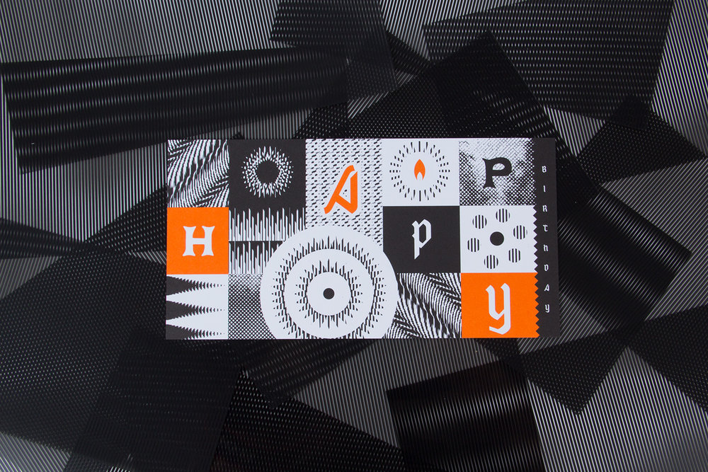

week 6September 28–October 4


— gifs made with Drawbot from this year

— mix CD I made in high school
Thoughts so far—
I’m not really interested in closed-control or specifically designed outcomes. Even if the outcome is unexpected for other people, it’s more satisfying when the outcome is unexpected for everyone. I want to learn from other people’s makings as much as my own. I’m interested in open-ended systems. It’s also why I’m interested in tools and type design. Tools carry the creation of something else. A typeface needs to be used, not just displayed, and it’s meaning changes as it is used. Letters are sensitive but not precious.
I still keep thinking about the idea of text-based communities. What could they be, beyond a forum or something like Twitter?
What is truly native about the browser?
A lot of sites function to redirect us to content. What about stand-alone sites? How can an experience be native to its environment, rather than a metaphor of something that exists? Everything is metaphor, a translation. What about the raw materials and ideas of the internet?
That’s what atom≠pixel means: the base units of digital and analog are not the same, so the larger structures created from that are not equivalent. So why attempt translation from physical to digital? Basically, art serving to be representational vs. art as art.
I’m wondering about making the intangible structures of the internet/browser explicit, its expanding rectangles, link pathways, but also its relationship to the whole world—because again, the internet has expanded the dimension of the world; it’s not another, separate world.
So instead of thinking of the internet as branches of “walled gardens”, I’m trying to think of it as one room expanding (like in the Sims 4…).

Because the webpage or Google Doc is an organic (but potentially immortal), editable document, eternal as the same object but ephemeral in its appearance, function, state, etc. Like a piece of land. That can be copy and pasted. But not named the same.
What is natural about the internet? It’s completely man-made. We’ve built this expansion, but do we understand it?
I’m seeing why investigating the internet for what it is, content-wise and structurally, rather than whether it’s good or bad is a way of understanding it. Since the internet is not a separate world but a layer of it, it will proportionally reflect the dominant culture of commercialism and commerce. But it’s not just that (and it’s not realistic to think of it as something where commercialism and commerce are the minority).
The internet vs. an internet: it’s whatever you want it to be.

“Louis was suspicious of architects and planners… he was critical of how they feel compelled to control every square meter of the country, which he saw as almost pathological. Louis used to say ‘You must leave a gap.’ … The metaphor of the gap was a place that was out of society’s control, outside the labor cycle, valueless, simply ecological.”
— Building a Wilderness with Louis le Roy by Julian Raxworthy, pg. 102–103
Closed, fully controlled systems vs. mostly controlled but open-ended systems.
“By placing ‘just one brick, then another,’ something emerges that is in synchronicity with the world, rather than a representation of it.”
— Building a Wilderness with Louis le Roy, pg. 104
Incremental change that affects current reality vs. whole constructions of idealized futures.

— sun, tree, wind, blinds, wall, low ISO
— dock lamps on water, Chicago
Sometimes meditative and random “animations” occur in the everyday natural setting that are just really nice. I think the top GIF would make for an incredibly spacial experience in the browser… maybe something about traveling through divs that fade in and out.
In my Modern and Contemporary Chinese Art History class, we learned about the Modern Woodcut Movement, in which woodblock artists now designed, carved, and printed their art. Before, the steps were divided: an artist would send their drawing to be carved and printed by other people.
The claim of whole artistic control is similar to how graphic design has panned out. Graphic designers do their own typography, and there is also a move toward making one’s own type as well. Being in control is probably why I’m annoyed with predetermined templates and structures. I like building things from scratch. So maybe that is why I don’t want to enforce a closed environment on other people.
—
— by Adi Goodrich; space and gradients

— scanimation birthday card; undoubtedly inspired some of my scroll charettes
Good ol’ Jim came to St. Louis and gave a talk / exhibited Type Hike at UMSL.
I learned about kopimism. Again questioning what the internet has done to religion.
To the main point: Jim talked about how Squarespace and Instagram made Type Hike possible due the short timeframe they had to make it and the amount of manpower they had (2 people). This was a perspective that I was sort of looking for. I kind of have a bias against quickly constructing templated sites and the amount of promotion on social media. But that’s just me and my purposes. If Squarespace and Instagram can support nonprofits making cool things and connecting people, why fight it. It’s all about how they’re used (mind the motivations of most of the users people). It kind of goes back to creating alternate systems instead of fighting against a system that wasn’t designed for your purposes anyway.
I am also put to sleep by elongated discussions on branding for the most part, so Jim’s talk on experimental processes and being an independent designer was nice. Most commercial design caters to safe, unprovocative design. If you don’t want to do that, then change your environment. Design is what you choose it to be, if you’re willing to accept the compromises. People have trouble with the demands of commercial design and the urge for personal expression and experimentation. They get trapped in the system. Jim went to grad school after getting sick of making “visual garbage” at a design firm and then just started building his practice after that. Easier said than done. But the point is to go for it. Maybe you’ll get lucky.
Don’t dawdle.
I wish he talked more about being an educator, so I asked him how teaching affects his practice. He said that it keeps him honest since you should practice what you preach, that it makes sure he doesn’t remain complacent, and that he’s always exposed to new ideas. I also wonder if it’s a kind of antidote to doing commercial work. Which I am at theoretical odds with.
Biggest takeaway from the dude is to be a supportive human.
I’ve been more curious about translations from digital to physical that expose the instable structures of the internet and that highlight how the properties of screens and physical structures are different. But what I’ve been making more of are translations from physical to digital, like GIFs of old projects.
I need to explore going from digital to physical I think. I’m still thinking about a phone-sized, non-linear zine and printing some sort of infinite scroll with a commercial thermal receipt printer.
I need to just do it. Because the work is more coherent than all these thoughts.